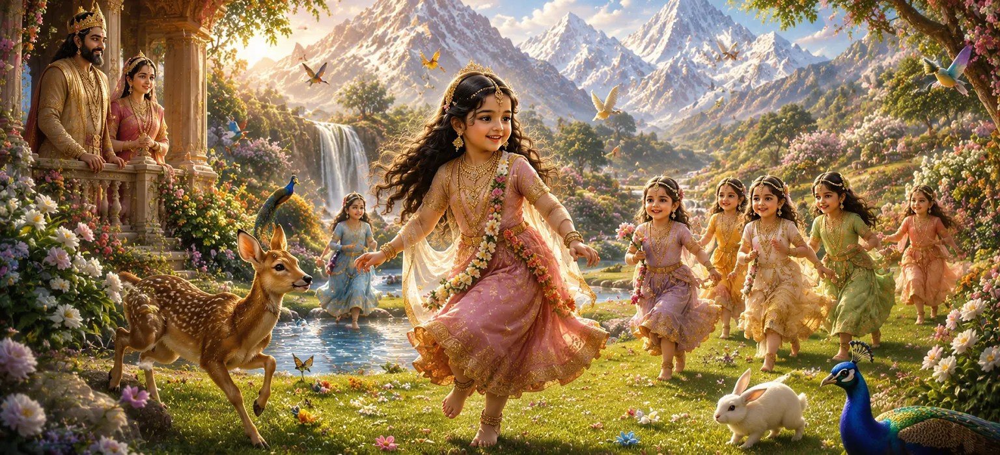

इस अध्याय में हिमालय और मैना के महल में देवी पार्वती के आनंदमय बचपन का वर्णन किया गया है। हालाँकि वह एक साधारण बच्ची के रूप में दिखाई देती थी, लेकिन उसकी दिव्य प्रकृति उसके कार्यों, शब्दों और चंचल गतिविधियों के माध्यम से चमकती थी। उसके प्रारंभिक वर्ष खुशियों, मासूमियत और पवित्र नियति के संकेतों से भरे थे जो उसका इंतजार कर रहे थे।
हिमालय और मैना अपनी बेटी को बहुत प्यार से पालते थे। बच्चे की हर मुस्कान उनके दिलों में खुशी लाती थी, और वे उसके विकास को देखकर धन्य महसूस करते थे। उनकी उपस्थिति ने उनके घर को शांति, समृद्धि और आनंद से भर दिया।
पार्वती ने अपना बचपन हिमालय साम्राज्य की सुंदरता की खोज में बिताया। वह फूलों, झरनों और पवित्र उपवनों के बीच खेलती थी, जिससे जो कोई भी उसे देखता, वह प्रसन्न हो जाता था। प्रकृति स्वयं दिव्य शिशु की उपस्थिति पर प्रेमपूर्वक प्रतिक्रिया करती प्रतीत हुई।
एक बच्ची के रूप में भी, पार्वती ने उल्लेखनीय ज्ञान और करुणा का प्रदर्शन किया। उनकी बातें अक्सर बड़ों को आश्चर्यचकित कर देती थीं और उनका सौम्य स्वभाव प्यार और सम्मान को प्रेरित करता था। जिन ऋषियों ने उसका अवलोकन किया, वे समझ गए कि उसमें असाधारण आध्यात्मिक गुण हैं।
हर कोई जिसने पार्वती का सामना किया वह उनकी दयालुता और आकर्षण से आकर्षित हो गया। मित्र, परिचारक, ऋषि-मुनि और यहाँ तक कि जानवर भी स्वाभाविक रूप से उसकी उपस्थिति से आकर्षित होते थे। वह जहां भी जाती थी खुशियां लेकर आती थी।
हृदय की पवित्रता आनंद और सद्भाव लाती है।
ईश्वर की महानता बचपन में भी देखी जा सकती है।
दया और प्रेम आध्यात्मिक महानता के लक्षण हैं।
कई ऋषियों ने हिमालय राज्य का दौरा किया और युवा पार्वती का अवलोकन किया। वे उसके असाधारण गुणों से आश्चर्यचकित थे और उन्होंने अनुमान लगाया कि वह भविष्य में एक महान दिव्य मिशन पूरा करेगी।
यह अध्याय सिखाता है कि पवित्रता, दयालुता और बुद्धिमत्ता जीवन के शुरुआती चरणों में भी प्रकट हो सकती है। पार्वती का बचपन भक्तों को याद दिलाता है कि छोटी उम्र से ही दिव्य गुणों का पोषण किया जाना चाहिए और प्रेम और करुणा के माध्यम से व्यक्त किया जाना चाहिए।
अपने बचपन के दौरान भी, पार्वती ने पवित्र पूजा के प्रति एक स्वाभाविक आकर्षण दिखाया। उसे पवित्र स्थानों पर जाना, आध्यात्मिक शिक्षाएँ सुनना और भक्ति के कार्यों में भाग लेना अच्छा लगता था जिससे उसके दिल को शांति मिलती थी।
हालांकि अभी भी एक बच्ची, पार्वती ने कभी-कभी ऐसे गुण प्रदर्शित किए जो उनकी भविष्य की भूमिका का संकेत देते थे। उनकी भक्ति, ज्ञान और आध्यात्मिक शक्ति ने सुझाव दिया कि वह भगवान शिव से जुड़े एक अद्वितीय उद्देश्य के लिए नियत थीं।
"दिव्य बालक की मासूमियत में भविष्य की महानता की रोशनी चमकती है।"
देवी पार्वती की आनंदमय बचपन की लीलाओं को देखने के बाद, कहानी एक महत्वपूर्ण मोड़ की ओर बढ़ती है। दिव्य ऋषि नारद के आगमन की खोज के लिए अगले अध्याय को जारी रखें, जिनकी हिमालय यात्रा से पार्वती की दिव्य नियति और ब्रह्मांडीय योजना में भविष्य की भूमिका के बारे में गहन सच्चाई का पता चलता है।